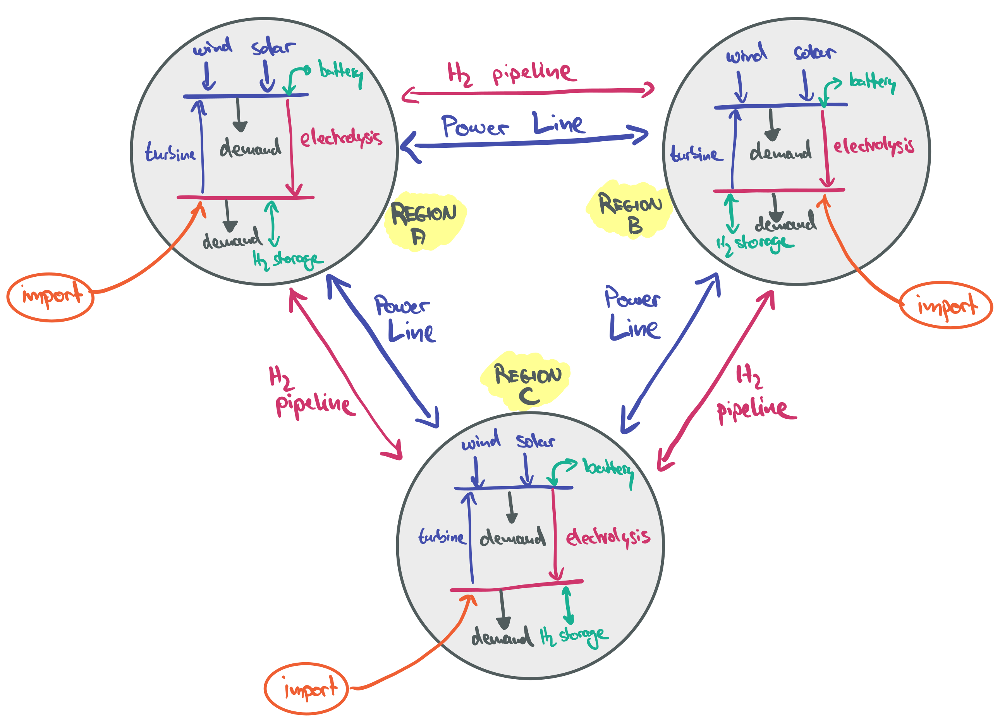

Models with Networks#
This section builds the foundation of an electricity and hydrogen model with power lines and pipelines connecting different countries. The goal is to assess different balancing mechanisms for the large-scale integration of variable renewables and identifying trade-offs between balancing them spatially with networks or temporally with storage.

Model Foundation#
import pandas as pd
import pypsa
RESOLUTION = 3 # 3-hourly
SOLVER = "highs" # or 'gurobi'
Cost Assumptions#
We take techno-economic assumptions from the technology-data repository which collects assumptions on costs and efficiencies:
YEAR = 2040
url = f"https://raw.githubusercontent.com/PyPSA/technology-data/master/outputs/costs_{YEAR}.csv"
costs = pd.read_csv(url, index_col=[0, 1])
costs.loc[costs.unit.str.contains("/kW"), "value"] *= 1e3
costs = costs.value.unstack().fillna({"discount rate": 0.07, "lifetime": 20, "FOM": 0})
We calculate the capital costs (i.e. annualised investment costs, €/MW/a or €/MWh/a for storage), using the discount rate and lifetime.
def annuity(r, n):
return r / (1.0 - 1.0 / (1.0 + r) ** n)
a = costs.apply(lambda x: annuity(x["discount rate"], x["lifetime"]), axis=1)
costs["capital_cost"] = (a + costs["FOM"] / 100) * costs["investment"]
Time Series#
The wind and solar capacity factor time series have been retrieved from model.energy. Go there to find more time series for other countries and plug them in here.
url = {
"Germany": "https://model.energy/data/time-series-dd07c6bb61a102ba3399f062230a24fc.csv",
"Spain": "https://model.energy/data/time-series-bb901ba96566f929463616e013936637.csv",
"United Kingdom": "https://model.energy/data/time-series-71c7fcaf08ed1eff68e14fdf0f28f738.csv",
}
ts = pd.concat(
{c: pd.read_csv(url[c], index_col=0, parse_dates=True) for c in url},
axis=1,
)
ts.head(3)
| Germany | Spain | United Kingdom | ||||
|---|---|---|---|---|---|---|
| onwind | solar | onwind | solar | onwind | solar | |
| 2013-01-01 00:00:00 | 0.848 | 0.0 | 0.236 | 0.0 | 0.605 | 0.0 |
| 2013-01-01 01:00:00 | 0.846 | 0.0 | 0.226 | 0.0 | 0.608 | 0.0 |
| 2013-01-01 02:00:00 | 0.831 | 0.0 | 0.219 | 0.0 | 0.624 | 0.0 |
The demand time series are exported from the ENTSO-E Transparency Platform.
url = "https://tubcloud.tu-berlin.de/s/5ZcfnfC7mEwEGWt/download/electricity-demand.csv"
demand = pd.read_csv(url, index_col=0, parse_dates=True)
demand.rename(
columns={"DE": "Germany", "ES": "Spain", "GB": "United Kingdom"}, inplace=True
)
demand.head(3)
| AL | AT | BA | BE | BG | CH | CZ | Germany | DK | EE | ... | NO | PL | PT | RO | RS | SE | SI | SK | UA | XK | |
|---|---|---|---|---|---|---|---|---|---|---|---|---|---|---|---|---|---|---|---|---|---|
| 2013-01-01 00:00:00 | 845.172414 | 6376.0 | 1186.913580 | 8096.0 | 4388.8889 | 5995.0 | 5618.0 | 38617.5824 | 3339.0 | 844.0 | ... | 14741.0 | 13134.0 | 4750.0 | 5779.0 | 5580.0 | 14610.0 | 1161.0 | 2785.0 | 15823.0 | 992.000000 |
| 2013-01-01 01:00:00 | 794.068966 | 6112.0 | 1104.753086 | 7607.0 | 4166.6667 | 5790.0 | 5574.0 | 37058.2418 | 3118.0 | 812.0 | ... | 14555.0 | 12475.0 | 4557.0 | 5560.0 | 5288.0 | 14343.0 | 1110.0 | 2658.0 | 15357.0 | 940.088889 |
| 2013-01-01 02:00:00 | 741.000000 | 5785.0 | 1041.604938 | 7218.0 | 3985.8586 | 5448.0 | 5451.0 | 35576.9231 | 2970.0 | 788.0 | ... | 14389.0 | 11994.0 | 4262.0 | 5403.0 | 4963.0 | 14117.0 | 1090.0 | 2571.0 | 15215.0 | 882.311111 |
3 rows × 36 columns
Electricity Components#
In a fresh PyPSA network instance, we set the coordinates of each country as the coordinates of the electricity buses.
n = pypsa.Network()
REGIONS = pd.Index(["Germany", "Spain", "United Kingdom"])
LAT = [51.17, 40.42, 54.77]
LON = [10.45, -3.70, -2.02]
n.add("Bus", REGIONS, x=LON, y=LAT, carrier="AC", unit="MW", location=REGIONS)
n.set_snapshots(demand.index)
We also define a range of carriers (i.e. energy carriers or technologies) that we will use in the model. This will be useful later when plotting optimisation results.
CARRIERS = {
"solar": "gold",
"wind": "steelblue",
"load shedding": "indianred",
"battery charger": "lightgreen",
"battery discharger": "lightgreen",
"battery storage": "grey",
"battery": "grey",
"electrolysis": "violet",
"turbine": "orange",
"hydrogen storage": "orchid",
"hydrogen": "orchid",
"hydrogen load": "magenta",
"hydrogen import": "black",
"AC": "black",
"HVDC": "lightseagreen",
"pipeline": "cyan",
"load": "slategrey",
}
n.add(
"Carrier",
CARRIERS.keys(),
color=CARRIERS.values(),
);
Then, we add the electricity demand time series for each region:
n.add(
"Load", REGIONS, suffix=" load", bus=REGIONS, p_set=demand[REGIONS], carrier="load"
);
For the wind and solar generators, we pass the capacity factors as p_max_pu and add the annuitized capital costs.
As a trick for modelling curtailment, we add a small marginal_cost to the wind generators to nudge those to be curtailed first before solar.
p_max_pu_wind = ts.xs("onwind", level=1, axis=1).rename(columns=lambda s: s + " wind")
n.add(
"Generator",
p_max_pu_wind.columns,
bus=REGIONS,
p_max_pu=p_max_pu_wind,
p_nom_extendable=True,
capital_cost=costs.at["onwind", "capital_cost"],
marginal_cost=0.5,
carrier="wind",
)
p_max_pu_solar = ts.xs("solar", level=1, axis=1).rename(columns=lambda s: s + " solar")
n.add(
"Generator",
p_max_pu_solar.columns,
bus=REGIONS,
p_max_pu=p_max_pu_solar,
p_nom_extendable=True,
capital_cost=costs.at["solar-utility", "capital_cost"],
carrier="solar",
);
We also add a generator with a very high marginal cost to represent load shedding with a value of lost load (VoLL) of 3000 €/MWh.
n.add(
"Generator",
REGIONS,
suffix=" load shedding",
bus=REGIONS,
p_nom=demand[REGIONS].max(),
marginal_cost=3000,
carrier="load shedding",
);
Storage#
Now, we add some storage options to each model region:
For hydrogen storage, we model the electrolyser, the hydrogen storage, and the turbine for re-electrification separately, so that these components can be independently sized. We also include some constant hydrogen demand at a rate of half of each regions’ average electricity demand.
For battery storage, we separately model the battery inverter (charger and discharger) and the battery storage itself. This has the advantage that the power-to-energy ratio can be optimised.
n.add("Bus", REGIONS, suffix=" hydrogen", carrier="hydrogen", x=LON, y=LAT, unit="MW", location=REGIONS)
n.add(
"Load",
REGIONS,
suffix=" hydrogen load",
bus=REGIONS + " hydrogen",
p_set=demand[REGIONS].mean() / 2,
carrier="hydrogen load",
);
n.add(
"Link",
REGIONS,
suffix=" electrolysis",
bus0=REGIONS,
bus1=pd.Index(REGIONS) + " hydrogen",
carrier="electrolysis",
p_nom_extendable=True,
efficiency=costs.at["electrolysis", "efficiency"],
capital_cost=costs.at["electrolysis", "capital_cost"],
)
n.add(
"Link",
REGIONS,
suffix=" turbine",
bus0=pd.Index(REGIONS) + " hydrogen",
bus1=REGIONS,
carrier="turbine",
p_nom_extendable=True,
efficiency=costs.at["OCGT", "efficiency"],
capital_cost=costs.at["OCGT", "capital_cost"],
)
n.add(
"Store",
REGIONS,
suffix=" hydrogen storage",
bus=pd.Index(REGIONS) + " hydrogen",
carrier="hydrogen storage",
capital_cost=costs.at["hydrogen storage underground", "capital_cost"],
e_nom_extendable=True,
e_cyclic=True,
)
n.add("Bus", REGIONS, suffix=" battery", carrier="battery", x=LON, y=LAT, unit="MW", location=REGIONS)
n.add(
"Link",
REGIONS,
suffix=" battery charger",
bus0=REGIONS,
bus1=REGIONS + " battery",
carrier="battery charger",
p_nom_extendable=True,
efficiency=0.95,
capital_cost=costs.at["battery inverter", "capital_cost"],
)
n.add(
"Link",
REGIONS,
suffix=" battery discharger",
bus0=REGIONS + " battery",
bus1=REGIONS,
carrier="battery discharger",
p_nom_extendable=True,
efficiency=0.95,
)
n.add(
"Store",
REGIONS,
suffix=" battery storage",
bus=REGIONS + " battery",
carrier="battery storage",
capital_cost=costs.at["battery storage", "capital_cost"],
e_nom_extendable=True,
e_cyclic=True,
);
For the battery storage, we need to take special care of the inverter. As the same component can be used for charging and discharging, the capacities of our battery charger and discharger component must be linked.
This is not done automatically by PyPSA, so we have to add an extra constraint, which we can pass as extra_functionality to the optimisation.
def battery_constraint(n: pypsa.Network, sns: pd.Index) -> None:
"""Constraint to ensure that the nominal capacity of battery chargers and dischargers are in a fixed ratio."""
dischargers_i = n.links[n.links.index.str.contains(" discharger")].index
chargers_i = n.links[n.links.index.str.contains(" charger")].index
eff = n.links.efficiency[dischargers_i].values
lhs = n.model["Link-p_nom"].loc[chargers_i]
rhs = n.model["Link-p_nom"].loc[dischargers_i] * eff
n.model.add_constraints(lhs == rhs, name="Link-charger_ratio")
Transmission and Pipelines#
As the next modelling step, we will now add transmission links and hydrogen pipelines between the regions as expansion options. By modelling the interconnectors as bidirectional links, we will assume that they are controllable point-to-point HVDC connections. They are also assumed to be lossless, otherwise a similar workaround with two unidirectional links as for battery inverters has to be implemented. The cost of grids and pipelines is length-dependent.
# Define connections between regions with approximate distances
connections = [
("Germany", "United Kingdom", 1000), # km
("Germany", "Spain", 1700), # km
("Spain", "United Kingdom", 1600), # km
]
for bus0, bus1, length in connections:
n.add(
"Link",
f"{bus0}-{bus1} HVDC",
bus0=bus0,
bus1=bus1,
carrier="HVDC",
p_nom_extendable=True,
capital_cost=costs.at["HVDC overhead", "capital_cost"] * length,
p_min_pu=-1, # bidirectional
)
n.add(
"Link",
f"{bus0}-{bus1} pipeline",
bus0=bus0 + " hydrogen",
bus1=bus1 + " hydrogen",
carrier="pipeline",
p_nom_extendable=True,
capital_cost=costs.at["H2 (g) pipeline", "capital_cost"] * length,
p_min_pu=-1, # bidirectional
)
Finally, we add the option to import hydrogen from outside the model scope at a fixed cost. This could represent imports from dedicated renewable energy regions (e.g. North Africa, Australia, etc.).
import_costs = pd.Series(
{
"Germany": 100,
"Spain": 90,
"United Kingdom": 105,
}
)
n.add(
"Generator",
import_costs.index,
suffix=" hydrogen import",
bus=REGIONS,
p_nom=10_000, # large value
marginal_cost=import_costs,
carrier="hydrogen import",
);
Temporal Clustering#
To save some computation time, we only sample every third snapshot, which corresponds to a temporal resolution of 3 hours. Note that the snapshot weightings (the duration each time step represents) have to be adjusted accordingly.
n.set_snapshots(n.snapshots[::RESOLUTION])
n.snapshot_weightings.loc[:, :] = RESOLUTION
Exploration#
We could now already run the optimisation and look at a first set of results.
# n.optimize(
# solver_name=SOLVER,
# log_to_console=False,
# extra_functionality=battery_constraint,
# )
But the exploration is left to you! Here are some ideas for sensitivities to explore and metrics to look at:
Metrics:
Installed capacities of wind, solar, electrolysers, hydrogen storage, etc. (MW or MWh)
Total annual system costs and breakdown by technology (billion €/a and % of total cost). This can be built from
n.statistics.opex(groupby=["location", "carrier"])andn.statistics.capex(groupby=["location", "carrier"]).Energy balances of different carrier as time series (electricity, hydrogen) to identify key operational patterns. This can be accessed from
n.statistics.energy_balance(groupby=["bus", "carrier"])and plotted intereactively withn.statistics.energy_balance.iplot.area(bus_carrier="AC").Electricity and hydrogen prices in each country. These can be accessed under
n.buses_t.marginal_price.Net imports of electricity and hydrogen by country and size of transmission/pipeline capacities. This can be accessed from
n.links_t.p0andn.links.p_nom_opt. Hydrogen imports from outside the model scope can be accessed fromn.statistics.energy_balance(groupby=["bus", "carrier"]).Storage filling levels per region over time. This can be accessed from
n.stores_t.e.
Sensitivities:
Choose a different triplet of countries (e.g. Belgium, Netherlands, Germany) and see how it affects the level of electricity and hydrogen trade. This can be done by retrieving alternative wind and solar time series form model.energy, changing the coordinates of the buses, and accessing different columns in the
demanddataframe.Omit the option to build transmission or hydrogen pipelines or both. This can be done by removing the respective
Linkcomponents withn.remove("Link", ...).Vary the cost assumptions by changing the overall projection year (e.g. 2030, 2040, 2050). This can be done when loading the cost data.
Vary the import costs for hydrogen and observe the impact on domestic electrolysis and storage. This can be done by changing
n.generators.loc["hydrogen import", "marginal_cost"] *= 0.7(to reduce import costs by 30%).Make hydrogen storage more expensive (e.g. by assuming steel tank storage instead of underground storage). This can be done by changing
n.stores.loc["hydrogen storage", "capital_cost"] *= 10(to increase the capital costs by factor 10).Vary the cost of hydrogen pipelines and power transmission lines. Do you see tipping points where suddenly a lot more or less capacity is built? This can be done by changing
n.links.loc["pipeline, "capital_cost"] *= 0.5(to reduce the capital costs of pipeline by 50%).Increase or decrease the hydrogen demand. What effect does it have on electricity prices? This can be done by changing
n.loads.loc["hydrogen load", "p_set"] *= 1.5(to increase the demand by 50%).
Feel free to explore other ideas as well!